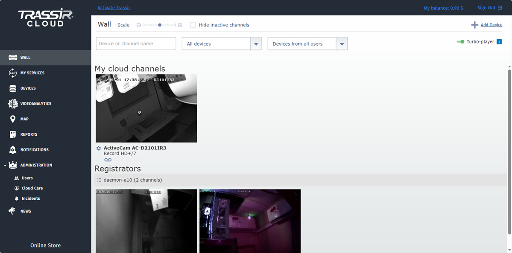
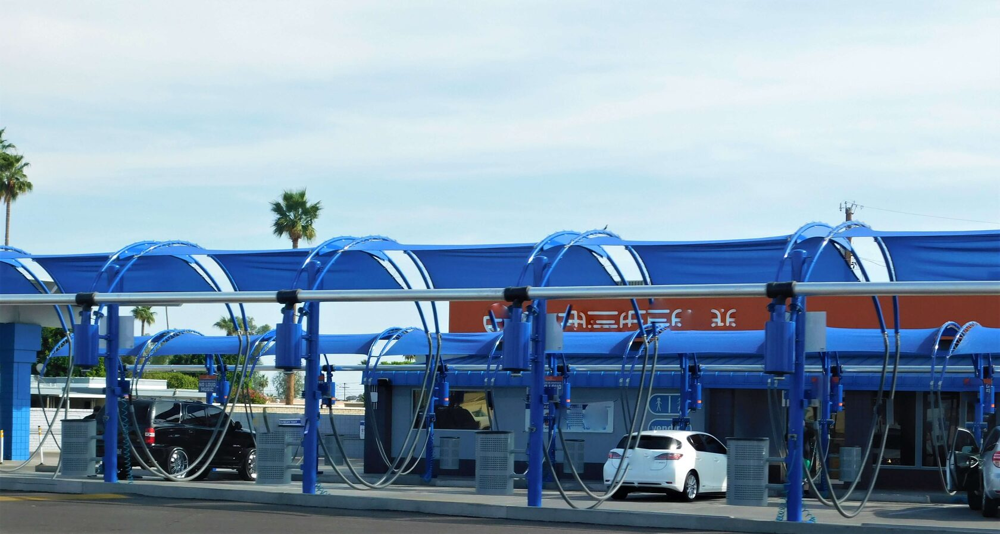

Для самостоятельных камер
- Бесплатные тарифы
- Хранение записи с камер от 3 до 120 дней
- Масштабирование
- Ссылка с уровнем доступа
Профессиональное ПО для видеонаблюдения с интуитивно понятным интерфейсом.
Сделано в России.

Экосистема TRASSIR Cloud позволяет работать с облаком как с самостоятельным решением, так и использовать его в связке с другими продуктами.
TRASSIR Cloud может работать как самостоятельное решение, чаще всего для небольших объектов: подключаются камеры, которые работают с TRASSIR Cloud напрямую и не требуют для работы регистратора или сервера.
TRASSIR Cloud может работать как часть экосистемы, расширяя возможности вашей VMS системы.



Подбор оборудования
От небольшой системы до сложного проекта.
Поможем выбрать подходящее решение.